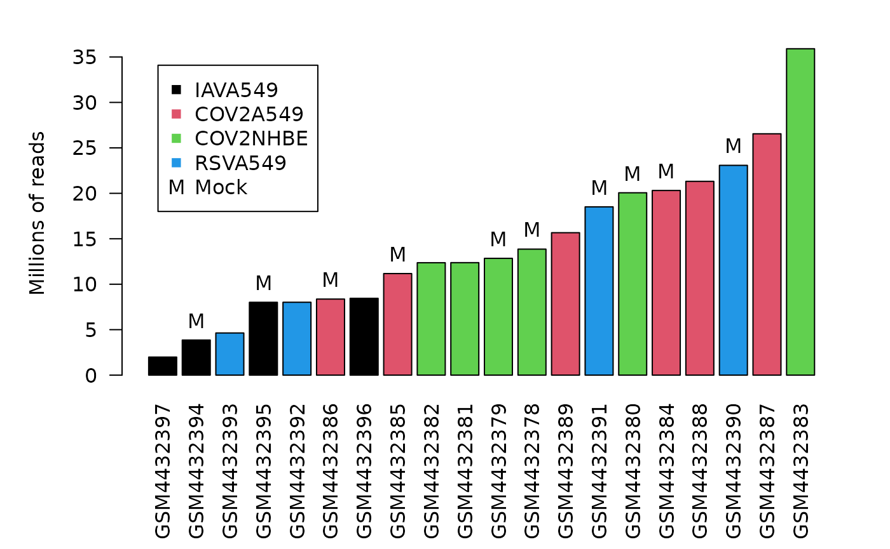
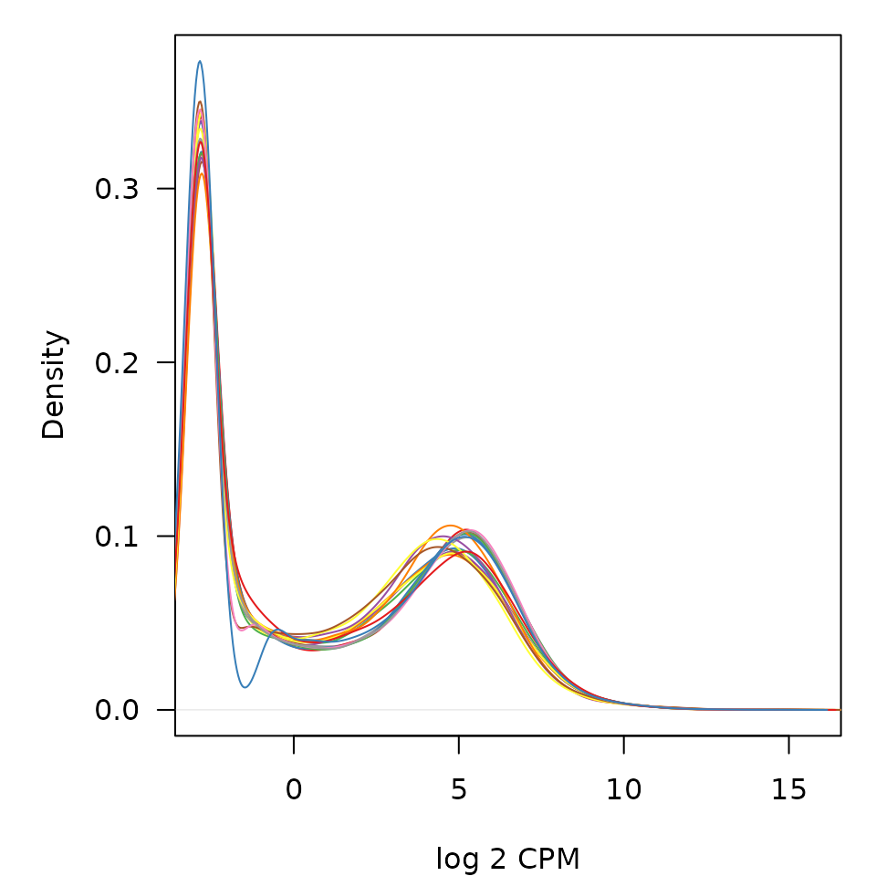
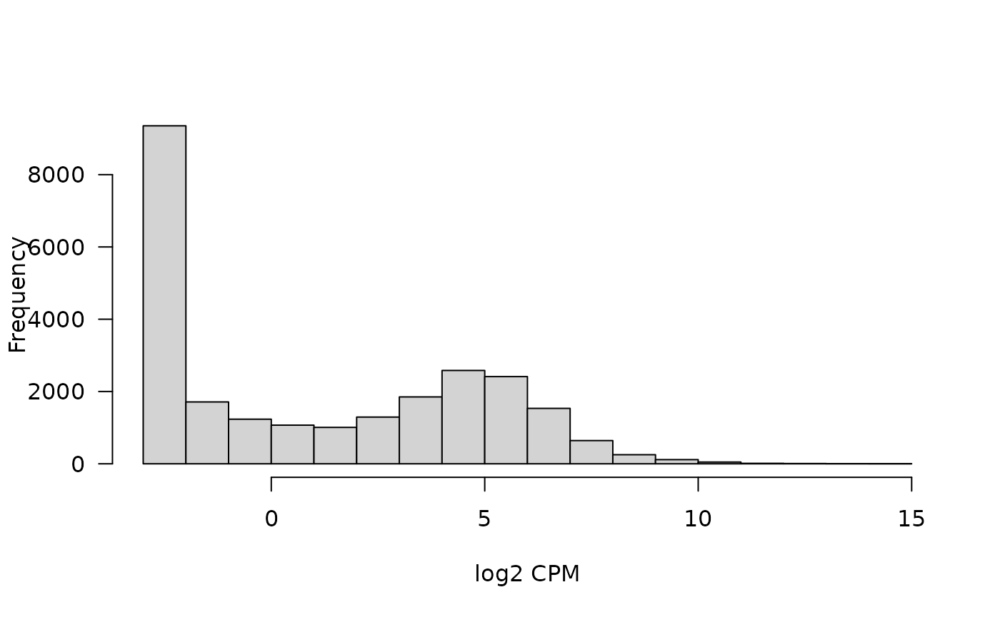
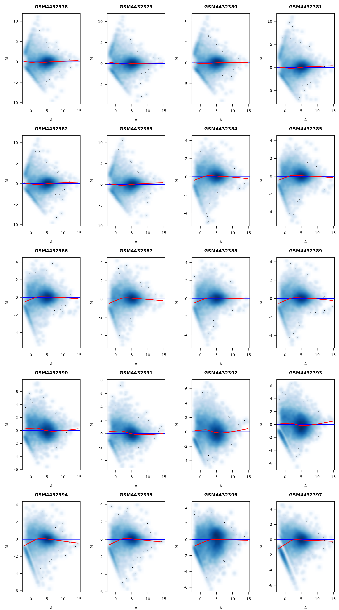
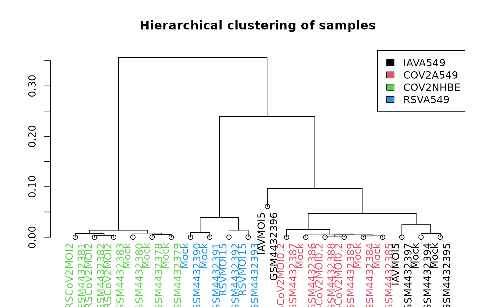
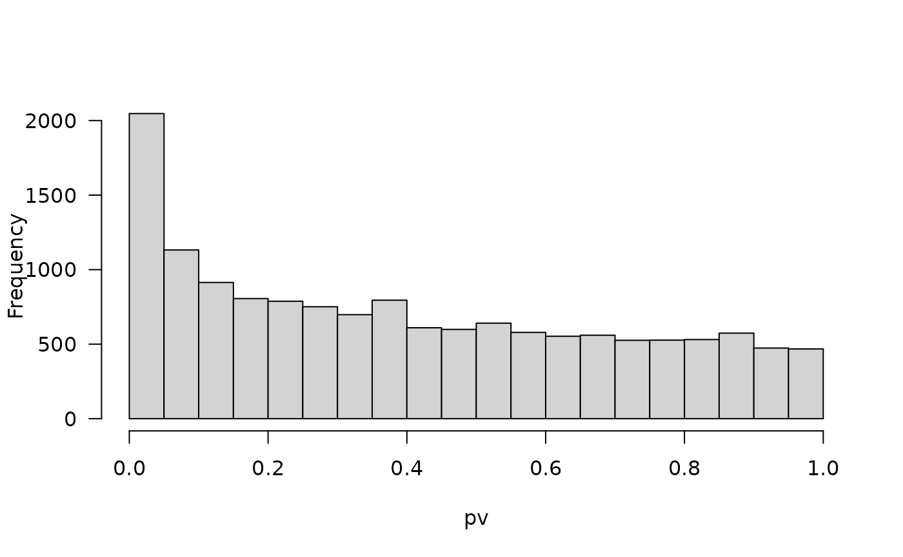

IEO Project template
IEO 2026, MSc Bioinformatics, UPF
Robert Castelo
Universitat Pompeu Fabrarobert.castelo@upf.edu
2026-04-09
IEOprojectAnalysis.RmdAbstract
Here we investigate gene expression changes in two human cell lines, between cells cultured with and without infection by three different respiratory viruses, namely SARS-CoV-2, seasonal influenza A virus, and the human respiratory syncytial virus. We find that library preparation protocols differed among cell lines, precluding comparing them, but found differentially expressed genes due to infection within each cell line.
Introduction
The severe acute respiratory syndrome-related coronavirus 2 (SARS-CoV-2) is a highly pathogenic human zoonotic coronavirus, which causes Coronavirus disease 2019 (COVID-19). In an effort to understand the host transcriptional response to the SARS-Cov-2 virus, Blanco-Melo et al. (2020) sequenced the transcriptome of two different human cell lines, human alveolar adenocarcinoma cells (A549) and primary human bronchial epithelial (NHBE) cells, after infecting them with SARS-Cov-2, seasonal influenza A virus (IAV) and human respiratory syncytial virus (RSV), and growing them in the same culture conditions without infection (mock).
The resulting raw RNA-seq data have been deposited at the Gene Expression Omnibus (GEO), where they are publicly available under accession GSE147507. Here, we show a first exploratory analysis of the corresponding RNA-seq gene expression profiles generated as a table of counts using the DEE2 (https://dee2.io) pipeline by Ziemann, Kaspi, and El-Osta (2019), and further packaged into a SummarizedExperiment object with genes mapped to Entrez identifiers. This object also stores the phenotypic information about the profiled samples that has been also made available at GEO.
The directories in this package template follow the structure of an R package (consult this link for further information) adapted for the purpose of data analysis:
R: functions to avoid repeating steps and store auxiliary code, used in the vignette.
vignettes: Rmarkdown document of the data analysis.
inst/extdata: repository of the data to be analyzed and any other kind of additional functional and annotation data employed during the analysis and which is unavailable through an R package. This directory is moved to the package root directory at install.
inst/doc: repository for the results of the analysis that we want to provide without having to run the entire analysis again, e.g., tables of differentially expressed genes. This directory is moved to the package root directory at install, where also the vignettes are installed.
man: manual pages of functions defined in the R directory that for some reason we want to export from the package.
Every other directory you see in this package has been automatically
generated in the package building process as, for instance, the
doc directory with the result of the vignette.
When you edit and adapt this vignette for your own data analysis
project, you should do it in the .Rmd file of the
vignettes directory (not the one copied to
the doc directory because this one is overwritten during
package building and if you edit there you will loose your
edits). To build this vignette without building the entire
package, you should type the following in the R shell:
devtools::build_vignettes()This function call will build your vignette and copy the resulting
HTML to the doc directory. Thus, to see the result, you
should go there and open that HTML file.
The rest of the documentation of this package is provided within the
files of the R directory using roxygen2,
which means that before you build the entire package you have to
generate the documentation and NAMESPACE file typing in the
R shell:
devtools::document()Both steps, calling devtools::build_vignettes() and
devtools::document() have to be done from the root
directory of your package.
IMPORTANT: This package template is just an example to facilitate getting started with R-markdown, illustrate the encapsulation of a data analysis into an R package and provide an example of a possible structure of the data analysis for the the project. You do not have to do the analysis of your dataset exactly in the same way as it is done here. Please read carefully the description of the project, and its technical requirements to know what you are expected to do. In particular, when you carry out the second part of the project, you should conduct the differential expression analysis in the way that best suits the questions you want to address. You do not need to do the analysis in every possible way, just in one way, in the way you think it makes more sense to you.
IF YOU THINK AN ANALYSIS OR A DIAGNOSTIC OR A VISUALIZATION DOES NOT MAKE SENSE, OR IT IS NOT JUSTIFIED, YOU SHOULD NOT DO IT.
Quality assessment
Data import and cleaning
We start importing the raw table of counts.
library(SummarizedExperiment)
se <- readRDS(file.path(system.file("extdata",
package="IEOproject"),
"GSE147507.rds"))
se
class: RangedSummarizedExperiment
dim: 25122 80
metadata(4): experimentData annotation ensemblVersion urlProcessedData
assays(1): counts
rownames(25122): 1 10 ... 9994 9997
rowData names(5): gene_id gene_biotype description gene_id_version
symbol
colnames(80): SRR11412215 SRR11412216 ... SRR11412293 SRR11412294
colData names(39): title geo_accession ... time point:ch1 treatment:ch1We have 25122 genes by 80 samples. From the first row and column names shown by the object, we can figure out that genes are defined by Entrez (Maglott et al. 2010) identifiers and samples by Sequence Read Archive Run (SRR) identifiers.
The row data in this object contains information about the profiled genes.
head(rowData(se))
DataFrame with 6 rows and 5 columns
gene_id gene_biotype description
<character> <character> <character>
1 ENSG00000121410 protein_coding alpha-1-B glycoprote..
10 ENSG00000156006 protein_coding N-acetyltransferase ..
100 ENSG00000196839 protein_coding adenosine deaminase ..
1000 ENSG00000170558 protein_coding cadherin 2 [Source:H..
10000 ENSG00000117020 protein_coding AKT serine/threonine..
100008586 ENSG00000236362 protein_coding G antigen 12F [Sourc..
gene_id_version symbol
<character> <character>
1 ENSG00000121410.11 A1BG
10 ENSG00000156006.4 NAT2
100 ENSG00000196839.12 ADA
1000 ENSG00000170558.8 CDH2
10000 ENSG00000117020.16 AKT3
100008586 ENSG00000236362.8 GAGE12FAmong this information, the gene symbol and description are potentially useful for interpreting results of, for instance, a differential expression analysis. Let’s explore now the column (phenotypic) data.
dim(colData(se))
[1] 80 39
head(colData(se), n=3)
DataFrame with 3 rows and 39 columns
title geo_accession status submission_date
<factor> <character> <factor> <factor>
SRR11412215 SARS004_mock_3 GSM4432378 Public on Mar 25 2020 Mar 24 2020
SRR11412216 SARS004_mock_3 GSM4432378 Public on Mar 25 2020 Mar 24 2020
SRR11412217 SARS004_mock_3 GSM4432378 Public on Mar 25 2020 Mar 24 2020
last_update_date type channel_count source_name_ch1
<factor> <factor> <factor> <factor>
SRR11412215 Mar 26 2020 SRA 1 Mock treated NHBE cells
SRR11412216 Mar 26 2020 SRA 1 Mock treated NHBE cells
SRR11412217 Mar 26 2020 SRA 1 Mock treated NHBE cells
organism_ch1 characteristics_ch1
<factor> <factor>
SRR11412215 Homo sapiens cell line: NHBE
SRR11412216 Homo sapiens cell line: NHBE
SRR11412217 Homo sapiens cell line: NHBE
characteristics_ch1.1
<factor>
SRR11412215 cell type: primary human bronchial epithelial cells
SRR11412216 cell type: primary human bronchial epithelial cells
SRR11412217 cell type: primary human bronchial epithelial cells
characteristics_ch1.2 characteristics_ch1.3
<factor> <factor>
SRR11412215 treatment: Mock treatment time point: 24hrs after treatment
SRR11412216 treatment: Mock treatment time point: 24hrs after treatment
SRR11412217 treatment: Mock treatment time point: 24hrs after treatment
characteristics_ch1.4 molecule_ch1 extract_protocol_ch1
<factor> <factor> <factor>
SRR11412215 polyA RNA TruSeq Stranded mRNA LP
SRR11412216 polyA RNA TruSeq Stranded mRNA LP
SRR11412217 polyA RNA TruSeq Stranded mRNA LP
extract_protocol_ch1.1
<factor>
SRR11412215 Total RNA was extracted using RNeasy Mini Kit (Qiagen)
SRR11412216 Total RNA was extracted using RNeasy Mini Kit (Qiagen)
SRR11412217 Total RNA was extracted using RNeasy Mini Kit (Qiagen)
extract_protocol_ch1.2
<factor>
SRR11412215 TruSeq RNA Library Prep Kit v2 (A549) or TruSeq Stranded mRNA LP (NHBE) according to the manufacturer’s instructions
SRR11412216 TruSeq RNA Library Prep Kit v2 (A549) or TruSeq Stranded mRNA LP (NHBE) according to the manufacturer’s instructions
SRR11412217 TruSeq RNA Library Prep Kit v2 (A549) or TruSeq Stranded mRNA LP (NHBE) according to the manufacturer’s instructions
taxid_ch1 description
<factor> <factor>
SRR11412215 9606 SARS004-mock-3_S3
SRR11412216 9606 SARS004-mock-3_S3
SRR11412217 9606 SARS004-mock-3_S3
data_processing
<factor>
SRR11412215 cDNA libraries were sequenced using an Illumina NextSeq 500 platform
SRR11412216 cDNA libraries were sequenced using an Illumina NextSeq 500 platform
SRR11412217 cDNA libraries were sequenced using an Illumina NextSeq 500 platform
data_processing.1
<factor>
SRR11412215 Raw sequencing reads were aligned to the human genome (hg19) using the RNA-Seq Alignment App (v2.0.1) on Basespace (Illumina, CA)
SRR11412216 Raw sequencing reads were aligned to the human genome (hg19) using the RNA-Seq Alignment App (v2.0.1) on Basespace (Illumina, CA)
SRR11412217 Raw sequencing reads were aligned to the human genome (hg19) using the RNA-Seq Alignment App (v2.0.1) on Basespace (Illumina, CA)
data_processing.2
<factor>
SRR11412215 Differential gene expression analysis was performed using DESeq2 (implemented in the RNA-Seq Differential Expression App (v1.0.1) on Basespace (Illumina, CA)) comparing Infected samples to their correspondent mock treated sample, for each virus/cell type.
SRR11412216 Differential gene expression analysis was performed using DESeq2 (implemented in the RNA-Seq Differential Expression App (v1.0.1) on Basespace (Illumina, CA)) comparing Infected samples to their correspondent mock treated sample, for each virus/cell type.
SRR11412217 Differential gene expression analysis was performed using DESeq2 (implemented in the RNA-Seq Differential Expression App (v1.0.1) on Basespace (Illumina, CA)) comparing Infected samples to their correspondent mock treated sample, for each virus/cell type.
data_processing.3
<factor>
SRR11412215 Genome_build: hg19
SRR11412216 Genome_build: hg19
SRR11412217 Genome_build: hg19
data_processing.4
<factor>
SRR11412215 Supplementary_files_format_and_content: Tab separated value (tsv) matrix of raw read counts per gene for each sample.
SRR11412216 Supplementary_files_format_and_content: Tab separated value (tsv) matrix of raw read counts per gene for each sample.
SRR11412217 Supplementary_files_format_and_content: Tab separated value (tsv) matrix of raw read counts per gene for each sample.
platform_id data_row_count instrument_model library_selection
<factor> <factor> <factor> <factor>
SRR11412215 GPL18573 0 Illumina NextSeq 500 cDNA
SRR11412216 GPL18573 0 Illumina NextSeq 500 cDNA
SRR11412217 GPL18573 0 Illumina NextSeq 500 cDNA
library_source library_strategy
<factor> <factor>
SRR11412215 transcriptomic RNA-Seq
SRR11412216 transcriptomic RNA-Seq
SRR11412217 transcriptomic RNA-Seq
relation
<factor>
SRR11412215 BioSample: https://www.ncbi.nlm.nih.gov/biosample/SAMN14444845
SRR11412216 BioSample: https://www.ncbi.nlm.nih.gov/biosample/SAMN14444845
SRR11412217 BioSample: https://www.ncbi.nlm.nih.gov/biosample/SAMN14444845
relation.1
<factor>
SRR11412215 SRA: https://www.ncbi.nlm.nih.gov/sra?term=SRX7990866
SRR11412216 SRA: https://www.ncbi.nlm.nih.gov/sra?term=SRX7990866
SRR11412217 SRA: https://www.ncbi.nlm.nih.gov/sra?term=SRX7990866
supplementary_file_1 cell line:ch1 cell type:ch1
<factor> <character> <character>
SRR11412215 NONE NHBE primary human bronch..
SRR11412216 NONE NHBE primary human bronch..
SRR11412217 NONE NHBE primary human bronch..
strain:ch1 time point:ch1 treatment:ch1
<character> <character> <character>
SRR11412215 NA 24hrs after treatment Mock treatment
SRR11412216 NA 24hrs after treatment Mock treatment
SRR11412217 NA 24hrs after treatment Mock treatmentWe have a total of 39 phenotypic variables. The second column
geo_accession contains GEO Sample Accession Number (GSM)
identifers. GSM identifiers define individual samples, understood in our
context as individual sources of RNA. We can see these are repeated,
indicating that among the ncol(se) samples we have
technical replicates. We can figure out how many technical replicates
per GSM sample we have as follows:
So, we have 20 different individual samples and for each of them, we
have 4 technical replicates. We proceed now to add up the counts of the
tecnical replicates per sample. For this purpose, we use the function
add_tech_rep() defined in this package.
library(IEOproject)
se <- add_tech_rep(se, se$geo_accession)
se
class: RangedSummarizedExperiment
dim: 25122 20
metadata(4): experimentData annotation ensemblVersion urlProcessedData
assays(1): counts
rownames(25122): 1 10 ... 9994 9997
rowData names(5): gene_id gene_biotype description gene_id_version
symbol
colnames(20): GSM4432378 GSM4432379 ... GSM4432396 GSM4432397
colData names(39): title geo_accession ... time.point.ch1 treatment.ch1To proceed further exploring this dataset, we are going to use the edgeR package and
build a DGEList object, incorporating the gene metadata,
which includes the gene symbol.
Calculate CPM units of expression and put them as an additional assay element to ease their manipulation.
assays(se)$logCPM <- cpm(dge, log=TRUE)
assays(se)$logCPM[1:5, 1:5]
GSM4432378 GSM4432379 GSM4432380 GSM4432381 GSM4432382
1 -2.844713 -1.150128 -2.844713 -2.8447132 -1.732466
10 -1.491529 -2.844713 -2.065505 -1.7329147 -1.111948
100 4.166604 4.185806 4.025930 4.2270937 4.209122
1000 1.696604 1.556613 1.126312 0.8768851 1.570225
10000 4.454604 4.376299 4.990642 4.4027336 4.398040Let’s explore now some of the phenotypic variables. Unfortunately, we
do not have rich metadata that tells us what precise information is
stored in each variable. However, after some visual inspection, we would
find out that the variables characteristics_ch1 and
characteristics_ch1.2 contain the information about cell
line and treatment.
table(se$characteristics_ch1)
cell line: A549 cell line: NHBE
14 6
table(se$characteristics_ch1.2)
treatment: IAV infected (MOI 5)
2
treatment: Mock treatment
10
treatment: RSV infected (MOI 15)
2
treatment: SARS-CoV-2 infected (MOI 0.2)
3
treatment: SARS-CoV-2 infected (MOI 2)
3 To facilitate handling these variables we are going to recode them as follows.
se$cell_line <- se$characteristics_ch1
levels(se$cell_line) <- c("A549", "NHBE")
se$treatment <- se$characteristics_ch1.2
tmplevels <- gsub(" treatment", "", gsub("treatment: ", "", levels(se$treatment)))
tmplevels <- gsub(" infected ", "", tmplevels)
tmplevels <- gsub("\\(MOI ", "MOI", gsub(")", "", gsub("-", "", tmplevels)))
levels(se$treatment) <- tmplevelsWe can also identify some variables associated with technical
factors, such as the sample preparation protocol in
extract_protocol_ch1.
Finally, we also observe that the variable description
contains some relevant information about an apparent sub-grouping of the
samples, within cell lines.
se$description
[1] SARS004-mock-3_S3 SARS004-mock-2_S2
[3] SARS004-mock-1_S1 SARS004-CoV2-3_S6
[5] SARS004-CoV2-2_S5 SARS004-CoV2-1_S4
[7] CoV002-mock3-indexG3_S3 CoV002-mock2-indexG2_S2
[9] CoV002-mock1-indexG1_S1 CoV002-CoV2-3-indexG6_S6
[11] CoV002-CoV2-2-indexG5_S5 CoV002-CoV2-1-indexG4_S4
[13] svRNA184-mock-3-indexF3_S15 svRNA184-mock-1-indexF1_S13
[15] svRNA184-RSV-3-indexH9_S18 svRNA184-RSV-1-indexF4_S16
[17] 3-9-mock1-13_S20 3-9-mock2-14_S1
[19] 3-9-wt1-15_S2 3-9-wt2-16_S16
20 Levels: 3-9-mock1-13_S20 3-9-mock2-14_S1 3-9-wt1-15_S2 ... svRNA184-RSV-3-indexH9_S18In Table @ref(tab:pheno) below, we show this variable jointly with cell line and treatment to try to gather as much understanding as possible on the underlying experimental design.
| Identifer | Cell line | Treatment | Replicate |
|---|---|---|---|
| GSM4432378 | NHBE | Mock | SARS004-mock-3_S3 |
| GSM4432379 | NHBE | Mock | SARS004-mock-2_S2 |
| GSM4432380 | NHBE | Mock | SARS004-mock-1_S1 |
| GSM4432381 | NHBE | SARSCoV2MOI2 | SARS004-CoV2-3_S6 |
| GSM4432382 | NHBE | SARSCoV2MOI2 | SARS004-CoV2-2_S5 |
| GSM4432383 | NHBE | SARSCoV2MOI2 | SARS004-CoV2-1_S4 |
| GSM4432384 | A549 | Mock | CoV002-mock3-indexG3_S3 |
| GSM4432385 | A549 | Mock | CoV002-mock2-indexG2_S2 |
| GSM4432386 | A549 | Mock | CoV002-mock1-indexG1_S1 |
| GSM4432387 | A549 | SARSCoV2MOI0.2 | CoV002-CoV2-3-indexG6_S6 |
| GSM4432388 | A549 | SARSCoV2MOI0.2 | CoV002-CoV2-2-indexG5_S5 |
| GSM4432389 | A549 | SARSCoV2MOI0.2 | CoV002-CoV2-1-indexG4_S4 |
| GSM4432390 | A549 | Mock | svRNA184-mock-3-indexF3_S15 |
| GSM4432391 | A549 | Mock | svRNA184-mock-1-indexF1_S13 |
| GSM4432392 | A549 | RSVMOI15 | svRNA184-RSV-3-indexH9_S18 |
| GSM4432393 | A549 | RSVMOI15 | svRNA184-RSV-1-indexF4_S16 |
| GSM4432394 | A549 | Mock | 3-9-mock1-13_S20 |
| GSM4432395 | A549 | Mock | 3-9-mock2-14_S1 |
| GSM4432396 | A549 | IAVMOI5 | 3-9-wt1-15_S2 |
| GSM4432397 | A549 | IAVMOI5 | 3-9-wt2-16_S16 |
This table reflects the comments in variable
data_processing.2, which says “Differential gene expression
analysis was performed using DESeq2 (implemented in the RNA-Seq
Differential Expression App (v1.0.1) on Basespace (Illumina, CA))
comparing Infected samples to their correspondent mock treated sample,
for each virus/cell type.”. In other words, infected samples should be
compared with their corresponding mock samples. We can generate
such a grouping variable with some more informative levels, as
follows.
Sequencing depth
Let’s examine the sequencing depth in terms of total number of sequence read counts mapped to the genome per sample. Figure @ref(fig:libsizes) below shows the sequencing depth per sample, also known as library sizes, in increasing order.

Library sizes in increasing order.
We see substantial differences in sequencing depth, ranging from 2 to 36 million reads. Except for the IAV-A549 samples, which seem to have been all sequenced at a lower depth than the rest (< 10M), the other sample groups are not confounded with sequencing depth. Within sample groups, the RSV-549 mock samples were sequenced at a substantially higher depth than the RSV-infected ones.
Distribution of expression levels among samples
Figure @ref(fig:distRawExp) below shows the distribution of expression values per sample in logarithmic CPM units of expression.

Non-parametric density distribution of expression profiles per sample.
There are no substantial differences between the samples in the distribution of expression values.
Distribution of expression levels among genes
Let’s calculate now the average expression per gene through all the samples. Figure @ref(fig:exprdist) shows the distribution of those values across genes.

Distribution of average expression level per gene.
As expected, we have two modes, one for genes that are lowly expressed in nearly all samples and another for genes with some detectable levels of expression across a number of samples.
Filtering of lowly-expressed genes
We filter lowly-expressed genes using the function
filterByExpr(), grouping by sample-group to define the
minimum number of samples in which a gene should be expressed.
mask <- filterByExpr(dge, group=se$samplegroup)
se.filt <- se[mask, ]
dim(se.filt)
[1] 14573 20
dge.filt <- dge[mask, ]
dim(dge.filt)
[1] 14573 20We are left with 14573 genes.
Normalization
We calculate now the normalization factors on the filtered expression data set.
dge.filt <- calcNormFactors(dge.filt)Replace the raw log2 CPM units in the corresponding assay element of
the SummarizedExperiment object, by the normalized
ones.
assays(se.filt)$logCPM <- cpm(dge.filt, log=TRUE,
normalized.lib.sizes=TRUE)MA-plots
We examine now the MA-plots of the normalized expression profiles in Figure @ref(fig:maPlots).

MA-plots of filtered and normalized expression values.
A number of samples display some expression-level dependent bias. For
cases in which this occurs at the low-end of the expression level, one
solution could be to have a more stringent filter on minimum expression
(see the help page of the filterByExpr() function in the
edgeR
package). We should keep an eye on samples with these biases in case
they also display other unexpected features, because then we might
consider removing them.
Experimental design and batch identification
Here try to understand the underlying experimental design. Let’s start examining the distribution of samples across the combination of cell line and treatment.
table(se.filt$cell_line, se.filt$treatment)
IAVMOI5 Mock RSVMOI15 SARSCoV2MOI0.2 SARSCoV2MOI2
A549 2 7 2 3 0
NHBE 0 3 0 0 3We can see that not all combinations of cell line and treatment have been sequenced. For this reason, we can anticipate that it won’t be possible to identify expression changes associated with all levels of these two factors. We will have to make comparisons within each cell line, between those treatments that have been sequenced.
Now, let’s look at the combination of sample preparation protocol and cell line.
table(se.filt$extract_protocol_ch1, se$cell_line)
A549 NHBE
TruSeq RNA Library Prep Kit v2 14 0
TruSeq Stranded mRNA LP 0 6We can see that there is a perfect correlation between sample preparation protocol and cell line because the two cell lines were processed with different sample preparation protocols. This means that differences between NHBE and A549 samples are not going to be only due to biological differences but also technical.
We examine now how samples group together by hierarchical clustering and multidimensional scaling, annotating sample group and treatment. We calculate again log CPM values with a high prior count(3) to moderate extreme fold-changes produced by low counts. The resulting dendrogram is shown in Figure @ref(fig:sampleClustering).

Figure S6: Hierarchical clustering of the samples. Labels correspond to treatment and sample identifer, while colors indicate sample group.
As expected, NHBE cell line samples cluster separately from A549 samples and cell line seems to drive the largest portion of the variablity in the whole dataset. Next to this observation, all samples cluster by sample group, except one of the IAV-infected cells. Looking up its identifier, it does not correspond to the sample of lowest sequencing depth and therefore, there’s probably other reason than depth to cluster away from its group. In Figure @ref(fig:mdsPlot) we show the corresponding MDS plot.
Figure S7: Multidimensional scaling plot of the samples. Labels correspond to treatment and colors indicate sample group.
The MDS plot shows even more clear differences between A549 and NHBE samples and suggests clearly that samples group by the type of infection. As described by Blanco-Melo et al. (2020), mock-treated samples were cultured to match the conditions of the corresponding infected samples. For this reason, in this dataset it only makes sense to compare infected with mock samples within their corresponding cultured group.
Differential expression
We perform a simple assessment of the extent of expression changes and their associated p-values using the F-test implemented in the R/Bioconductor package sva. We compare mock with SARS-Cov-2 infected samples in the NHBE cell line. We first subset the data as follows:
se.filt.COV2NHBE <- se.filt[, se.filt$samplegroup == "COV2NHBE"]
se.filt.COV2NHBE$treatment <- droplevels(se.filt.COV2NHBE$treatment)In the second step above, we dropped the unused levels from the treatment factor variable. This is important to avoid using factor levels that do not exist in this subset of the data. We build now the corresponding full and null model matrices.
mod <- model.matrix(~ se.filt.COV2NHBE$treatment,
colData(se.filt.COV2NHBE))
mod0 <- model.matrix(~ 1, colData(se.filt.COV2NHBE))Finally, we conduct the F-test implemented in the package
sva and examine the amount of differential expression
between SARS-Cov-2 infected and mock cells.
library(sva)
pv <- f.pvalue(assays(se.filt.COV2NHBE)$logCPM, mod, mod0)
sum(p.adjust(pv, method="fdr") < 0.05)
[1] 3
sum(p.adjust(pv, method="fdr") < 0.1)
[1] 67We obtain 3 differentially expressed (DE) genes at FDR < 5% and 67 at FDR < 10%. In Figure @ref(fig:pdistCOV2NHBE) below we can see the distribution of the resulting p-values.

Distribution of raw p-values for an F-test on every gene between SARS-Cov-2 infected and mock samples in NHBE cell lines.
We build a table with the subset of 67 DE genes with FDR < 10% and show the top-10 genes with lowest p-value in Table @ref(tab:DEgenesSARScov2NHBE) below.
mask <- p.adjust(pv, method="fdr") < 0.1
DEgenesEGs <- names(pv)[mask]
DEgenesSyms <- mcols(se.filt)[DEgenesEGs, "symbol"]
DEgenesPvalue <- pv[mask]
DEgenesDesc <- mcols(se.filt)[DEgenesEGs, "description"]
DEgenesDesc <- sub(" \\[.+\\]", "", DEgenesDesc)
DEgenesTab <- data.frame(EntrezID=DEgenesEGs,
Symbol=DEgenesSyms,
Description=DEgenesDesc,
"P value"=DEgenesPvalue,
stringsAsFactors=FALSE, check.names=FALSE)
DEgenesTab <- DEgenesTab[order(DEgenesTab[["P value"]]), ] ## order by p-value
rownames(DEgenesTab) <- 1:nrow(DEgenesTab)| EntrezID | Symbol | Description | P value | |
|---|---|---|---|---|
| 1 | 547 | KIF1A | kinesin family member 1A | 0.00e+00 |
| 2 | 6289 | SAA2 | serum amyloid A2 | 7.00e-07 |
| 3 | 84419 | C15orf48 | chromosome 15 open reading frame 48 | 8.30e-06 |
| 4 | 3576 | CXCL8 | C-X-C motif chemokine ligand 8 | 1.93e-05 |
| 5 | 57115 | PGLYRP4 | peptidoglycan recognition protein 4 | 2.20e-05 |
| 6 | 1326 | MAP3K8 | mitogen-activated protein kinase kinase kinase 8 | 3.07e-05 |
| 7 | 10318 | TNIP1 | TNFAIP3 interacting protein 1 | 3.25e-05 |
| 8 | 6286 | S100P | S100 calcium binding protein P | 3.63e-05 |
| 9 | 3556 | IL1RAP | interleukin 1 receptor accessory protein | 4.10e-05 |
| 10 | 56300 | IL36G | interleukin 36, gamma | 5.05e-05 |
AI assistance
Here we either write that we did not use any AI tool to help with the analysis or, in case we have used it, we need to include here the following information:
- Which AI tool(s) did we use.
- What specific prompts we used.
- The output obtained from those prompts.
- Whether we directly accepted the output of those prompts, or we had to modify them and why.
Session information
sessionInfo()
R version 4.5.3 (2026-03-11)
Platform: x86_64-pc-linux-gnu
Running under: Ubuntu 24.04.4 LTS
Matrix products: default
BLAS: /usr/lib/x86_64-linux-gnu/openblas-pthread/libblas.so.3
LAPACK: /usr/lib/x86_64-linux-gnu/openblas-pthread/libopenblasp-r0.3.26.so; LAPACK version 3.12.0
locale:
[1] LC_CTYPE=C.UTF-8 LC_NUMERIC=C LC_TIME=C.UTF-8
[4] LC_COLLATE=C.UTF-8 LC_MONETARY=C.UTF-8 LC_MESSAGES=C.UTF-8
[7] LC_PAPER=C.UTF-8 LC_NAME=C LC_ADDRESS=C
[10] LC_TELEPHONE=C LC_MEASUREMENT=C.UTF-8 LC_IDENTIFICATION=C
time zone: UTC
tzcode source: system (glibc)
attached base packages:
[1] stats4 stats graphics grDevices utils datasets methods
[8] base
other attached packages:
[1] sva_3.58.0 BiocParallel_1.44.0
[3] genefilter_1.92.0 mgcv_1.9-4
[5] nlme_3.1-168 geneplotter_1.88.0
[7] annotate_1.88.0 XML_3.99-0.23
[9] AnnotationDbi_1.72.0 lattice_0.22-9
[11] edgeR_4.8.2 limma_3.66.0
[13] IEOproject_1.2.5 SummarizedExperiment_1.40.0
[15] Biobase_2.70.0 GenomicRanges_1.62.1
[17] Seqinfo_1.0.0 IRanges_2.44.0
[19] S4Vectors_0.48.1 BiocGenerics_0.56.0
[21] generics_0.1.4 MatrixGenerics_1.22.0
[23] matrixStats_1.5.0 usethis_3.2.1
[25] here_1.0.2 kableExtra_1.4.0
[27] knitr_1.51 BiocStyle_2.38.0
loaded via a namespace (and not attached):
[1] viridisLite_0.4.3 farver_2.1.2 blob_1.3.0
[4] Biostrings_2.78.0 fastmap_1.2.0 digest_0.6.39
[7] lifecycle_1.0.5 survival_3.8-6 statmod_1.5.1
[10] KEGGREST_1.50.0 RSQLite_2.4.6 magrittr_2.0.5
[13] compiler_4.5.3 rlang_1.2.0 sass_0.4.10
[16] tools_4.5.3 yaml_2.3.12 S4Arrays_1.10.1
[19] bit_4.6.0 DelayedArray_0.36.1 xml2_1.5.2
[22] RColorBrewer_1.1-3 abind_1.4-8 KernSmooth_2.23-26
[25] purrr_1.2.1 desc_1.4.3 grid_4.5.3
[28] xtable_1.8-8 scales_1.4.0 cli_3.6.5
[31] rmarkdown_2.31 crayon_1.5.3 ragg_1.5.2
[34] rstudioapi_0.18.0 httr_1.4.8 DBI_1.3.0
[37] cachem_1.1.0 stringr_1.6.0 splines_4.5.3
[40] parallel_4.5.3 BiocManager_1.30.27 XVector_0.50.0
[43] vctrs_0.7.2 Matrix_1.7-4 jsonlite_2.0.0
[46] bookdown_0.46 bit64_4.6.0-1 systemfonts_1.3.2
[49] locfit_1.5-9.12 jquerylib_0.1.4 glue_1.8.0
[52] pkgdown_2.2.0 codetools_0.2-20 stringi_1.8.7
[55] tibble_3.3.1 pillar_1.11.1 htmltools_0.5.9
[58] R6_2.6.1 textshaping_1.0.5 rprojroot_2.1.1
[61] evaluate_1.0.5 png_0.1-9 memoise_2.0.1
[64] bslib_0.10.0 svglite_2.2.2 SparseArray_1.10.10
[67] xfun_0.57 fs_2.0.1 pkgconfig_2.0.3